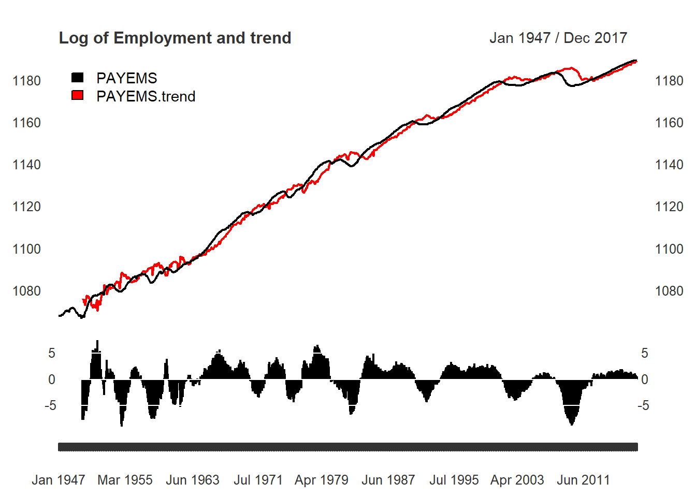

Reproducing Hamilton
Justin M Shea
Introduction
In the working paper titled “Why You Should Never Use the Hodrick-Prescott Filter” doi:10.3386/w23429, James D. Hamilton proposes an approach to economic time series filtering which achieve goals the HP-Filter attempts, but does not produce. Part of the evolution in any field is making right that which has been wrong. In this vein, the neverhpfilter package implements Hamilton’s contribution to Econometric time series filtering.
The abstract from Hamilton(2017) offers an excellent introduction.
Here’s why. (1) The HP filter produces series with spurious dynamic relations that have no basis in the underlying data-generating process. (2) Filtered values at the end of the sample are very different from those in the middle, and are also characterized by spurious dynamics.
(3) A statistical formalization of the problem typically produces values for the smoothing parameter vastly at odds with common practice, e.g., a value for \(\lambda\) far below 1600 for quarterly data.
(4) There’s a better alternative. A regression of the variable at date \(t + h\) on the four most recent values as of date \(t\) offers a robust approach to detrending that achieves all the objectives sought by users of the HP filter with none of its drawbacks.
A Better Alternative
Fortunately, Hamilton doesn’t just add to the list of critiques plaguing the Hodrick-Prescott filter, he offers a solution as well. For quarterly economic data, it can be described as an AR(4) process, additionally lagged by \(h\) lookahead periods.
\[y_{t+h} = \beta_0 + \beta_1 y_t + \beta_2 y_{t-1} +\beta_3 y_{t-2} + \beta_4 y_{t-3} + v_{t+h}\] \[\hat{v}_{t+h} = y_{t+h} + \hat{\beta}_0 + \hat{\beta}_1 y_t + \hat{\beta}_2 y_{t-1} + \hat{\beta}_3 y_{t-2} + \hat{\beta}_4 y_{t-3}\]
Implementation in R
library(xts)
library(knitr)
library(neverhpfilter)data(GDPC1)
log_RGDP <- 100*log(GDPC1)
gdp_filtered <- yth_filter(log_RGDP, h = 8, p = 4)
kable(tail(gdp_filtered, 8))| GDPC1 | GDPC1.trend | GDPC1.cycle | GDPC1.yt8-Xt_0 |
|---|---|---|---|
| 971.3998 | 971.0746 | 0.32512275 | 4.661666 |
| 971.5444 | 970.4246 | 1.11980556 | 5.036787 |
| 972.0977 | 971.9094 | 0.18831943 | 4.465194 |
| 972.7833 | 973.3109 | -0.52760922 | 3.880684 |
| 973.2190 | 973.2501 | -0.03104638 | 3.817619 |
| 973.5261 | 974.1597 | -0.63363121 | 3.327926 |
| 974.2795 | 974.9659 | -0.68630695 | 3.405300 |
| 975.0563 | 975.2427 | -0.18635065 | 3.777707 |
main <- "Log of Real GDP (GDPC1) and trend"
plot(gdp_filtered[,1:2], grid.col = "white", legend.loc = "topleft", main = main, panels = 'lines(gdp_filtered[,3], type="h", on=NA)')
main <- "Log of Real GDP cycle and random walk"
plot(gdp_filtered[,3:4], grid.col = "white", legend.loc = "topright", main = main)
abline(h = 0, lty = 2, lwd = 2, col = "darkgreen")
# household
Employment_log <- 100*log(PAYEMS["1947/"])
employ_ar <- yth_glm(Employment_log, h = 24, p = 12)
employ_filtered <- yth_filter(Employment_log, h = 24, p = 12)
main <- "Log of Employment and trend"
plot(employ_filtered[,1:2], grid.col = "white", legend.loc = "topleft", main = main, panels = 'lines(employ_filtered[,3], type="h", on=NA)')
main <- "Log of Employment cycle and random walk"
plot(employ_filtered[,3:4], grid.col = "white", legend.loc = "topright", main = main)
abline(h = 0, lty = 2, lwd = 2, col = "darkgreen")
Comparing results to Hamilton’s
Below is Table 2, found on pg. 40 of “Why You Should Never Use the Hodrick-Prescott Filter”.
data("Hamilton_table_2")
kable(Hamilton_table_2)| cycle.sd | gdp.cor | random.sd | gdp.rand.cor | Sample | |
|---|---|---|---|---|---|
| GDP | 3.38 | 1.00 | 3.69 | 1.00 | 1947-1/2016-1 |
| Consumption | 2.85 | 0.79 | 3.04 | 0.82 | 1947-1/2016-1 |
| Investment | 13.19 | 0.84 | 13.74 | 0.80 | 1947-1/2016-1 |
| Exports | 10.77 | 0.33 | 11.33 | 0.30 | 1947-1/2016-1 |
| Imports | 9.79 | 0.77 | 9.98 | 0.75 | 1947-1/2016-1 |
| Government-spending | 7.13 | 0.31 | 8.60 | 0.38 | 1947-1/2016-1 |
| Employment | 3.09 | 0.85 | 3.32 | 0.85 | 1947-1/2016-2 |
| Unemployment-rate | 1.44 | -0.81 | 1.72 | -0.79 | 1948-1/2016-2 |
| GDP-Deflator | 2.99 | 0.04 | 4.11 | -0.13 | 1947-1/2016-1 |
| S&P500 | 21.80 | 0.41 | 22.08 | 0.38 | 1950-1/2016-2 |
| 10-year-Treasury-yield | 1.46 | -0.05 | 1.51 | 0.08 | 1953-2/2016-2 |
| Fedfunds-rate | 2.78 | 0.33 | 3.03 | 0.40 | 1954-3/2016-2 |
| Real-rate | 2.25 | 0.39 | 2.60 | 0.42 | 1958-1/2014-3 |
GDP.St.Dev <- round(sd(gdp_filtered$GDPC1.cycle["/2016-1"], na.rm=TRUE), 2)
GDP.GDPCorr. <- cor(gdp_filtered$GDPC1.cycle["/2016-1"], gdp_filtered$GDPC1.cycle["/2016-1"], use = "complete.obs")
GDP.Random <- round(sd(coredata(gdp_filtered[,4]["/2016-1"]), na.rm=TRUE), 2)
GDP.RanCorr. <- cor(gdp_filtered[,4]["/2016-1"],gdp_filtered[,4]["/2016-1"], use = "complete.obs")
Sample <- gsub(" ","-",paste0(index(gdp_filtered[,1]),":",index(gdp_filtered["2016-1"])))
GDP <- cbind(GDP.St.Dev, GDP.GDPCorr., GDP.Random, GDP.RanCorr., Sample)
colnames(GDP) <- names(Hamilton_table_2)
kable(GDP)| cycle.sd | gdp.cor | random.sd | gdp.rand.cor | Sample | |
|---|---|---|---|---|---|
| GDPC1.cycle | 3.38 | 1 | 3.68 | 1 | 1947-Q1:2016-Q1 |
#round(sd(employ_filtered$PAYEMS.cycle["1947-1/2016-1"], na.rm=TRUE), 2)